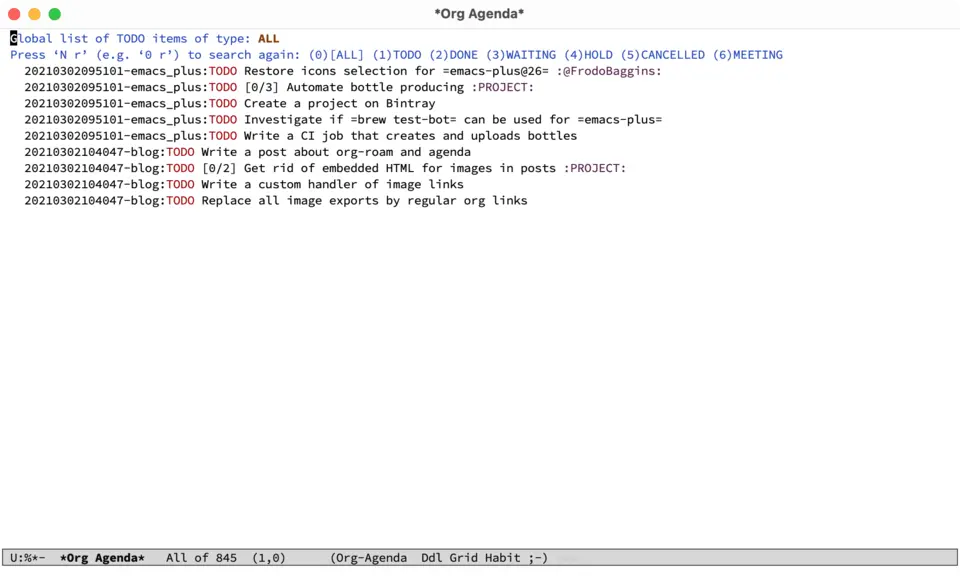
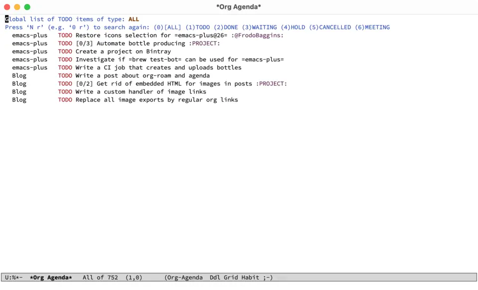
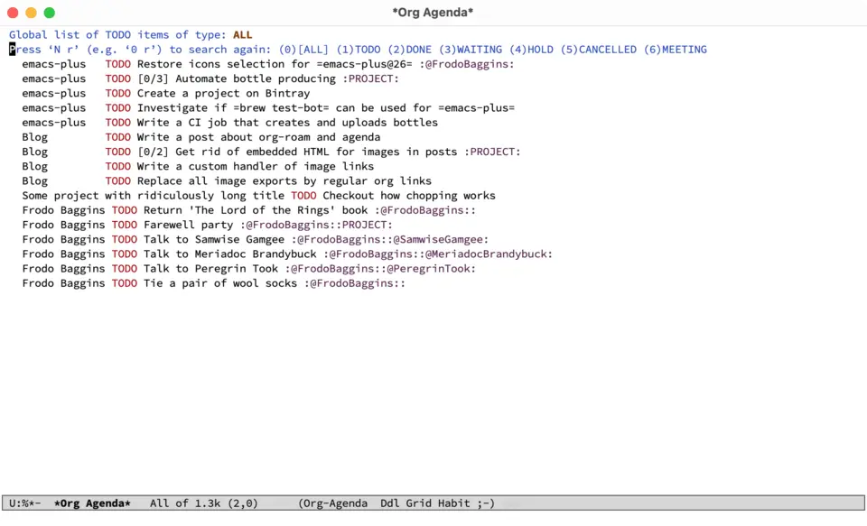
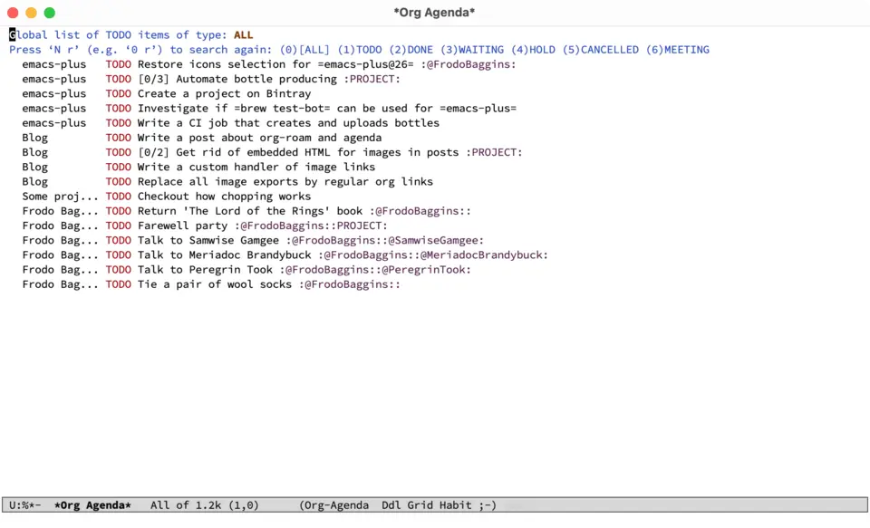

Task management with org-roam Vol. 2: Categories
In the previous article we set a ground for moving tasks to org-roam, and encountered an issue with visual garbage in the agenda buffer. Namely, org-roam file id as part of the category. In this article, we are going to explore the means to overcome this issue.


Change Log:
[2021-03-02 Tue]: Update category extraction function to useTITLEof the note and enforce length limit. Kudos to Tim Ruffing for the idea.[2021-03-02 Tue]: Update naming convention to match personal configurations.[2021-05-10 Mon]: Update post to reflect changes in org-roam v2. Previous version of this article is available on GitHub.
On of the simplest solutions is to mimic solution for headlines by setting CATEGORY property on the file level (manually or by using org-set-property).
:PROPERTIES:
:CATEGORY: emacs-plus
:END:
#+title: emacs-plus
...:PROPERTIES:
:CATEGORY: blog
:END:
#+title: Blog
...While this works, it is a manual labor. And in most cases we want to use TITLE as CATEGORY, at least for agenda buffer. Fortunately, we can help agenda to properly parse the category by modifying the value of org-agenda-prefix-format, which allows to specify how to render each line in the different agenda buffers (e.g. regular agenda, in the list of todo tasks etc). We are looking for the capability to evaluate arbitrary lisp expressions. The default value of this variable is
((agenda . " %i %-12:c%?-12t% s")
(todo . " %i %-12:c")
(tags . " %i %-12:c")
(search . " %i %-12:c"))The interesting part is %-12:c which means:
- Give the category (because of
c) a 12 chars wide field, padded with whitespace on the right (because of-). - Append a colon if there is a category (because of
:). - Finally, append the category of the item, or as given by the
CATEGORYproperty, or derived from the file name.
Instead of c we can use any expression.
(setq org-agenda-prefix-format
'((agenda . " %i %-12(vulpea-agenda-category)%?-12t% s")
(todo . " %i %-12(vulpea-agenda-category) ")
(tags . " %i %-12(vulpea-agenda-category) ")
(search . " %i %-12(vulpea-agenda-category) ")))
(defun vulpea-agenda-category ()
"Get category of item at point for agenda.
Category is defined by one of the following items:
- CATEGORY property
- TITLE keyword
- TITLE property
- filename without directory and extension
Usage example:
(setq org-agenda-prefix-format
'((agenda . \" %(vulpea-agenda-category) %?-12t %12s\")))
Refer to `org-agenda-prefix-format' for more information."
(let* ((file-name (when buffer-file-name
(file-name-sans-extension
(file-name-nondirectory buffer-file-name))))
(title (vulpea-buffer-prop-get "title"))
(category (org-get-category)))
(or (if (and
title
(string-equal category file-name))
title
category)
"")))In order to extract title, I am using vulpea-buffer-prop-get from vulpea library. It’s defined as:
(defun vulpea-buffer-prop-get (name)
"Get a buffer property called NAME as a string."
(org-with-point-at 1
(when (re-search-forward (concat "^#\\+" name ": \\(.*\\)")
(point-max) t)
(buffer-substring-no-properties
(match-beginning 1)
(match-end 1)))))
Now if we remove the manually set CATEGORY property from both files we will get the same result with nicely parsed categories. Please note that these two approaches can be mixed. For example, if you wish to override the category, just set this property explicitly and call it a day.
Additionally, it’s easy to extend this function to truncate overly long categories (in the screenshot above, Some project with ridiculously long title and Frodo Baggins are examples of long categories). We will use s.el library to achieve this.
(setq org-agenda-prefix-format
'((agenda . " %i %(vulpea-agenda-category 12)%?-12t% s")
(todo . " %i %(vulpea-agenda-category 12) ")
(tags . " %i %(vulpea-agenda-category 12) ")
(search . " %i %(vulpea-agenda-category 12) ")))
(defun vulpea-agenda-category (&optional len)
"Get category of item at point for agenda.
Category is defined by one of the following items:
- CATEGORY property
- TITLE keyword
- TITLE property
- filename without directory and extension
When LEN is a number, resulting string is padded right with
spaces and then truncated with ... on the right if result is
longer than LEN.
Usage example:
(setq org-agenda-prefix-format
'((agenda . \" %(vulpea-agenda-category) %?-12t %12s\")))
Refer to `org-agenda-prefix-format' for more information."
(let* ((file-name (when buffer-file-name
(file-name-sans-extension
(file-name-nondirectory buffer-file-name))))
(title (vulpea-buffer-prop-get "title"))
(category (org-get-category))
(result
(or (if (and
title
(string-equal category file-name))
title
category)
"")))
(if (numberp len)
(s-truncate len (s-pad-right len " " result))
result)))
Now the agenda is clean.
In the next article we are going to talk about tagging tasks related to a person. Stay tuned and keep roaming!
Task Management with org-roam Series
- Path to Roam
- Categories
- FILETAGS
- Automatic tagging
- Dynamic and fast agenda
- Select a person and view related tasks
- Capture
References
org-roamdocumentation on GitHub.org-modedocumentation on the official site.- personal configurations on GitHub.